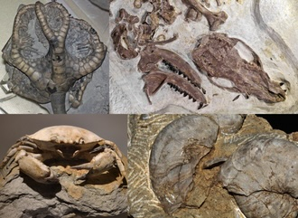
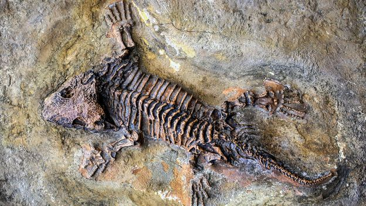
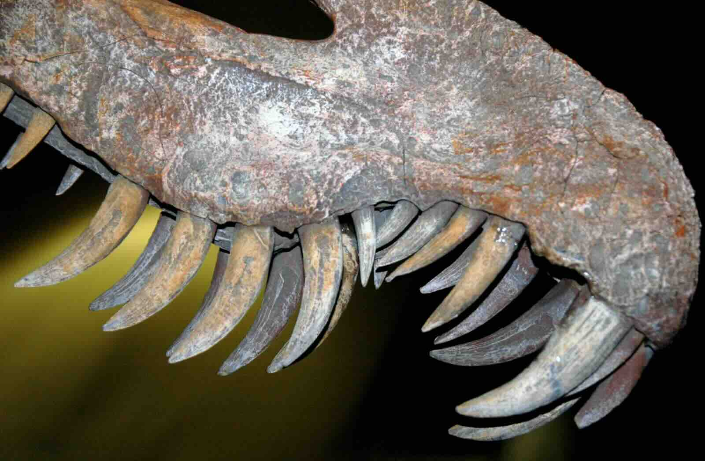
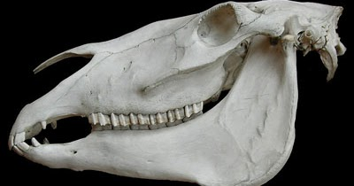
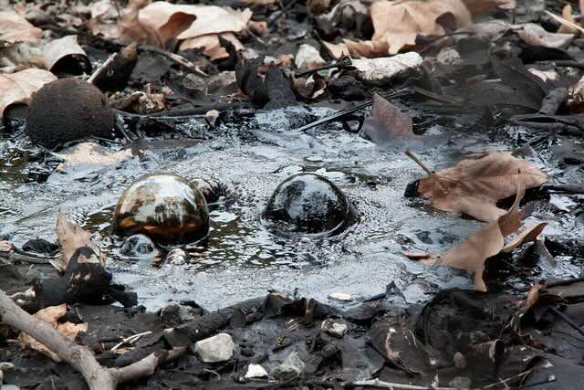
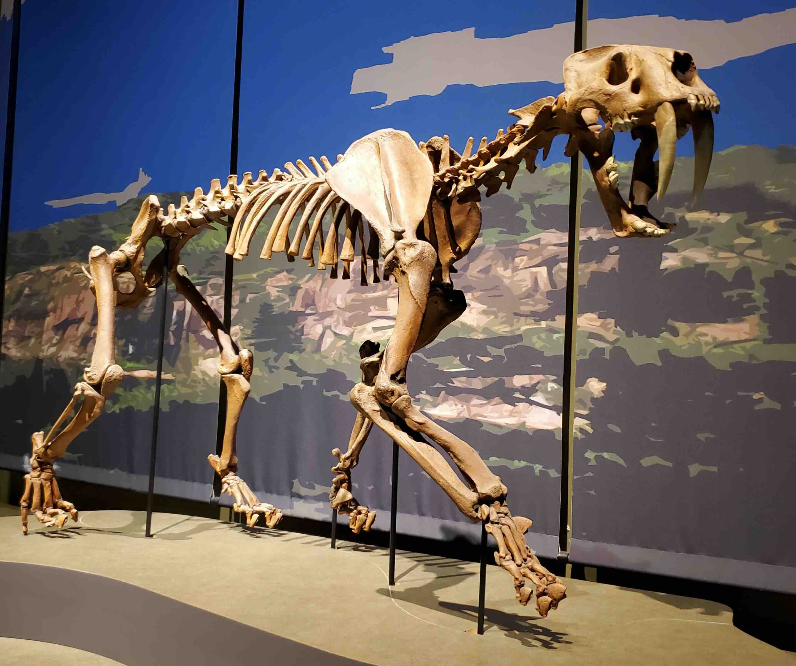
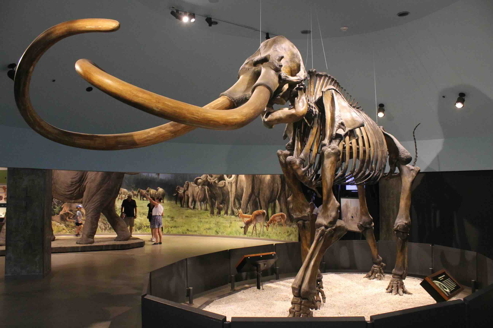
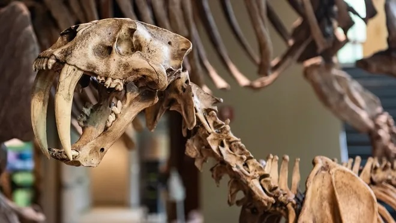
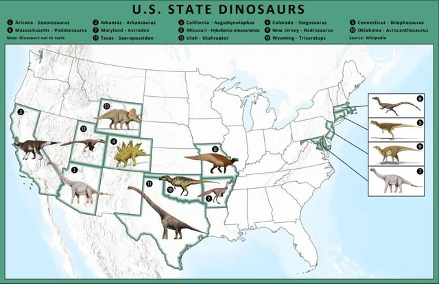
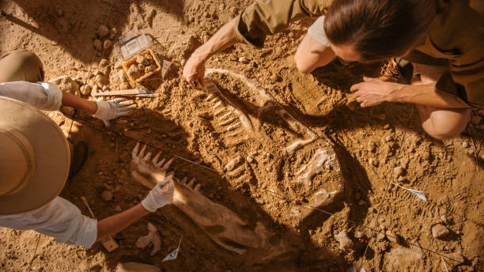

🦕 Fossils and Extinction Adventure! 🦴
Welcome, young scientists! Today we're going on an amazing journey back in time to discover the secrets of ancient life on Earth. We'll learn about fossils - nature's time capsules - and find out what happened to creatures that no longer exist today!
🔍 What Are Fossils?
Imagine finding the bones of a giant dinosaur or the footprint of an ancient animal frozen in rock for millions of years! That's exactly what fossils are - they're like nature's photo album, showing us what life was like long, long ago.
Key Word: Fossil
A fossil is the remains or traces of plants and animals that lived a very long time ago - sometimes millions of years!

Look at this amazing collection of different types of fossils! Each one tells a unique story about ancient life.
Types of Fossils
Fossils come in many different forms, and each one tells us a special story:
🦴 Body Fossils (Actual Remains):
- Bones: The skeleton parts of ancient animals
- Teeth: Often the hardest parts that survive longest
- Shells: Protective coverings of sea creatures
- Leaves: Plant parts that got preserved in rock
👣 Trace Fossils (Evidence of Activity):
- Footprints: Tracks showing where animals walked
- Burrows: Tunnels animals dug underground
- Bite marks: Evidence of ancient meals
- Droppings: Yes, even ancient poop can be fossils!
Even though millions of animals and plants have lived on Earth, only a tiny number became fossils. It's like winning a very rare lottery!
🏔️ How Do Fossils Form?
Creating a fossil is like making a very slow sandwich! Here's the amazing process:
- Quick Burial: When an animal dies, it needs to be covered quickly by mud, sand, or other materials
- Protection: The covering protects the remains from being eaten or rotting away
- Sediment Layers: More and more layers pile up on top over thousands of years
- Rock Formation: The pressure from all those layers slowly turns the sediment into solid rock
- Discovery: Millions of years later, erosion or digging reveals the fossil!

Here you can see how a complete skeleton became fossilized in layers of sedimentary rock over millions of years!
🤔 Think About This:
Why do you think most animals that die don't become fossils? What special conditions are needed for fossilization to happen?
🔬 What Fossils Tell Us
Fossils are like detective clues that help scientists solve mysteries about the past!
🍽️ Ancient Diets
By looking at fossil teeth, scientists can figure out what ancient animals ate:
🥩 Carnivores (Meat-Eaters)

Sharp, pointed teeth for tearing meat
🌿 Herbivores (Plant-Eaters)

Flat, grinding teeth for chewing plants
What Teeth Tell Us:
- Sharp, pointed teeth: These belong to carnivores (meat-eaters) like ancient cats and wolves
- Flat, grinding teeth: These belong to herbivores (plant-eaters) like ancient horses and elephants
- Mixed teeth types: These belong to omnivores that ate both plants and meat
🌍 Ancient Environments
Fossils can tell us amazing stories about how Earth's environments have changed:
Scientists have found fossils of ocean animals on top of tall mountains! This proves that these mountains were once at the bottom of ancient seas.
Environmental Clues from Fossils:
- Tropical plant fossils in cold places show the climate was once much warmer
- Sea creature fossils on dry land prove those areas were once underwater
- Desert animal fossils in wet areas show climates can completely change
👥 Animal Behavior
Fossil footprints are like ancient stories written in stone:
- Single tracks: Show animals that lived alone
- Groups of tracks: Prove some animals traveled in herds
- Track spacing: Tells us how fast the animal was moving
- Track size: Helps determine the animal's size and weight
🏛️ Famous Fossil Sites
La Brea Tar Pits - Nature's Sticky Trap
In Los Angeles, California, there's a famous place called the La Brea Tar Pits where thousands of animals got stuck in sticky black asphalt that bubbled up from underground. This created perfect conditions for fossil formation!

These bubbling asphalt pits still trap things today, just like they did thousands of years ago!

Complete skeleton of a Smilodon (saber-toothed cat) found at La Brea

Massive mammoth skeleton - these giants roamed ancient Earth!
Animals Found at La Brea:
- Saber-toothed cats with giant fangs
- Dire wolves (bigger than modern wolves)
- Giant ground sloths
- Ancient horses and camels
- Mammoths with curved tusks

Look at those incredible saber teeth! These massive fangs were perfect weapons for hunting large prey.
Over 1 million fossils have been found at the La Brea Tar Pits! Each state in the United States has its own special state fossil.

Every U.S. state has chosen its own special state fossil or dinosaur - can you find your state's fossil?
⚒️ Tools of the Trade
Paleontologists (fossil scientists) use special tools to carefully remove fossils from rock:

Real paleontologists at work! Notice how carefully they use small tools to uncover ancient treasures.
Paleontologist's Toolkit:
- Dental picks: Tiny tools that carefully scrape away rock (just like dentist tools!)
- Soft brushes: For sweeping away loose dirt and debris
- Chisels and hammers: For breaking away harder rock
- Special chemicals: To dissolve certain types of rock like asphalt
- Magnifying glasses: To see tiny details clearly
- Photography equipment: To document exactly where fossils are found
🔬 Fossil Preparator Job:
After fossils are dug up, they go to special labs where Fossil Preparators clean them using tiny tools and special liquids. This can take months or even years for one fossil!
💀 What Does "Extinct" Mean?
Key Word: Extinct
Extinct means that a type of plant or animal no longer exists anywhere on Earth today. Once a species goes extinct, it's gone forever.
🌪️ Causes of Extinction
Throughout Earth's history, different things have caused animals and plants to become extinct:
Natural Causes:
- Climate changes: Ice ages or warming periods
- Natural disasters: Volcanic eruptions, floods, wildfires
- Asteroid impacts: Space rocks hitting Earth
- Disease: Sickness spreading through populations
Human-Caused Extinctions:
- Hunting: Killing too many animals
- Habitat loss: Destroying where animals live
- Pollution: Making the environment unsafe
- Introducing new species: Bringing animals to places where they don't belong
🧩 Putting the Pieces Together
Scientists use fossils like puzzle pieces to understand:
- Size and appearance: Skull shape and bone size tell us how big animals were
- Where they lived: Fossil locations show ancient habitats
- What they ate: Tooth shapes reveal ancient diets
- How they moved: Leg bones and footprints show locomotion
- Social behavior: Group fossils indicate herd animals
- Environmental changes: Fossil distribution shows climate shifts
🎯 Test Your Knowledge!
🦷 Tooth Detective Challenge:
Look back at the carnivore and herbivore teeth images above. If you found a fossil skull with long, sharp, pointed teeth, what can you conclude about this ancient animal's diet? How do you know? Think about modern animals you know and their teeth!
🏔️ Mountain Mystery:
Imagine scientists find fossils of ancient sea creatures on top of a very tall mountain. What does this tell us about how this area has changed over millions of years?
👣 Footprint Investigation:
You discover a line of dinosaur footprints that are very close together, and next to them you find many more sets of similar footprints all going in the same direction. What can you conclude about how these dinosaurs lived?
🔍 Fossil Site Analysis:
Looking at the La Brea asphalt bubbles image, explain why this location was such a perfect "fossil factory." What made it different from other places where animals died?
🌟 Amazing Fossil Facts
The largest dinosaur fossil ever found was over 100 feet long - that's longer than three school buses put together!
Some insects have been found preserved in amber (tree sap) that's millions of years old, and they look exactly like they did when they got stuck!
Scientists have found fossils of bacteria that are over 3.5 billion years old - some of the oldest evidence of life on Earth!
The saber-toothed cats had teeth that were up to 7 inches long - longer than a pencil!
🎉 Conclusion: Time Travelers
Fossils are like magical time machines that let us travel back millions of years to see what life was like on ancient Earth. They show us incredible creatures that once roamed our planet, help us understand how environments change over time, and teach us important lessons about extinction and survival.
Every fossil discovery adds another piece to the giant puzzle of Earth's history. Who knows? Maybe one day you'll discover a fossil that teaches us something completely new about our amazing planet!
Remember: Fossils are rare treasures that took millions of years to form. They're our best evidence for understanding life on Earth before humans existed, and they continue to amaze and surprise scientists with new discoveries every year!